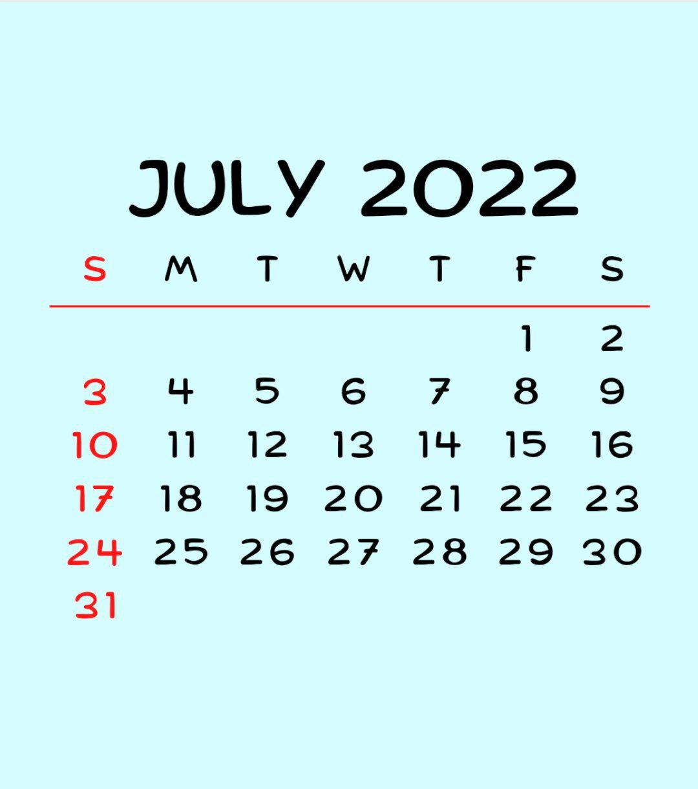

Welcome to Yayasan Anak-Anak Yatim Rumah Ilham Website
SPEECH AND WISDOM FROM THE CHAIRMAN OF RUMAH ILHAM
Bismillahirrahmanirrahim, Assalamualaikum W.B.T. I, Hj Hassanuddin Bin Ali, Chairman of Yayasan Anak-anak Yatim Rumah Ilham proudly welcoming you to Rumah Ilham.
Praise and thanksgiving are being said to Allah SWT for His permission and His grace, I was given this opportunity to lead the Yayasan as well as peace and blessings be upon to Rasulullah SAW, his family and his companions who inspired me to take care of and educate this orphans.
I come from Muar in a large family and have 11 siblings, growing up with the endless affection from both parents and we had perfect upbringing in academic and religion. Furthermore, Johor is known as a state that prioritizing religious education. This has also strenghthens my determination to become a successful person in life and hoping the best for akhirat. Thanks Allah and thanks to the preservance and determination of the Almighty, I succeed in my studies and career that I work hard on.
After retiring, I run my own business. But my heart still feels there is a shortage and it arises from the idea for the orphanage. With the support and help of some friends, I set up with the aim of Rumah Ilham defend orphans. I like orphans are educated as parents to educate their children at home, which not only provides protection (shelter) and eat only adopted but also religious upbriging and moral priority. In addition, academic studies are also being prioritized so that they would get a better education by learning from the hired teachers for their tuition. Similarly, I am not ashamed to ask for donations from the public to complete the facilities at the hostel for the comfort of our childrens.
Early today our society is already aware of the need for proper facilities for orphans either dormitory, dining hall, common room, prep room to the atmosphere and so they learn and grow well and perfect. I am also very careful about cleanliness and neatness of the children themselves. Therefore our children self-discipline implemented and also how to interact with people. I hope that the orphans we not only be independent but also excel in whatever field they operate.
Finally, as a private entity and we do not get regular funding from any party, appeal and ask for donations sir, madam for me to continue my jihad for the sake of the orphans were less fortunate.
With Love and Sincerity,
Hassanuddin Ali.
SUBSCRIBE FOR MORE
Be the first to know about our update.
WISDOM
And that you worship Allah and do not associate him with anything whatsoever and that you be kind to parents and next of kin and the neighbors who are near neighbors who are far away and colleagues and the traveler who displaced and slave you have. Surely Allah loves not the arrogant and vainglorious.
(An-Nisa',36)
CALENDAR
